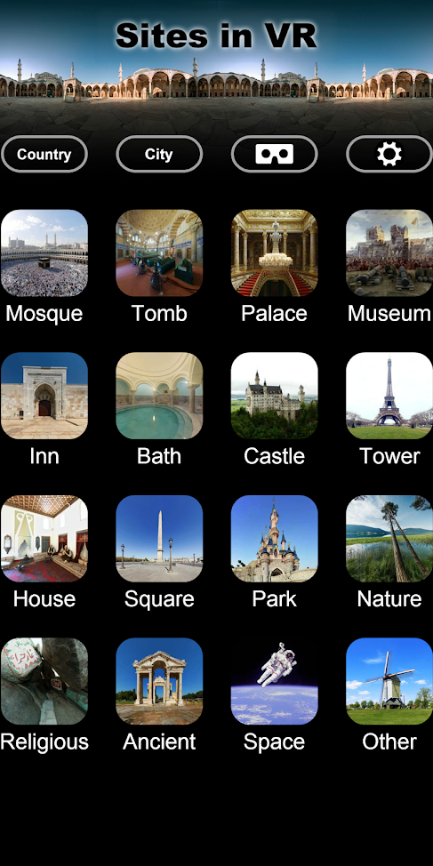
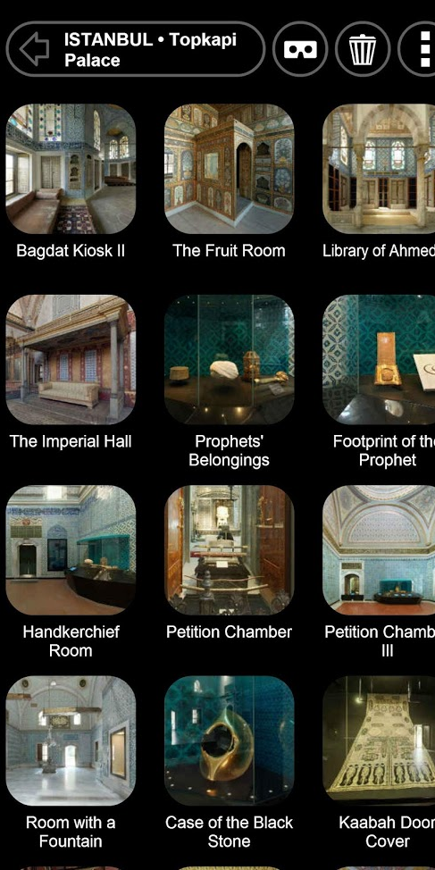
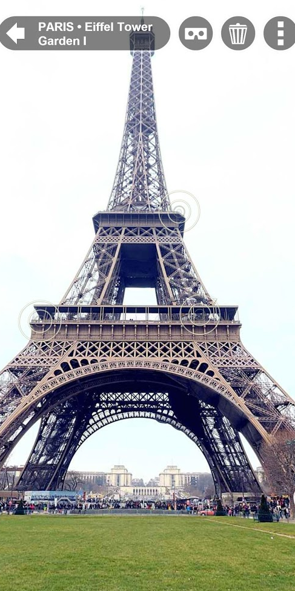
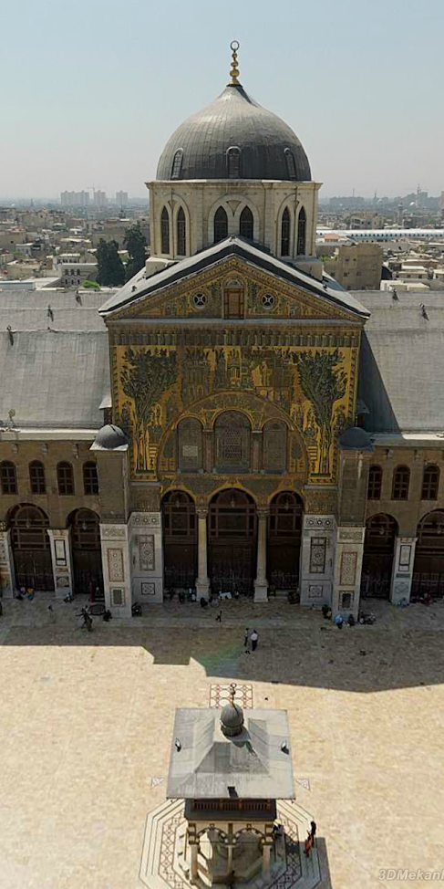

Sites in VR






❮
❯
×
Sites in VR gives you the opportunity to travel virtually and see world famous landmarks in several countries, such as Turkey, Egypt, Saudi Arabia, Belgium, France and many more. You may also explore the wonders of the Islamic architecture. What about visiting mosques, palaces, museums, castles, religious sites or ancient cities?
The app has more than a 1000 panoramic high qualities images and it can take you to places like the Egypt pyramids or even to the moon. Do not waste your time, check it right now!